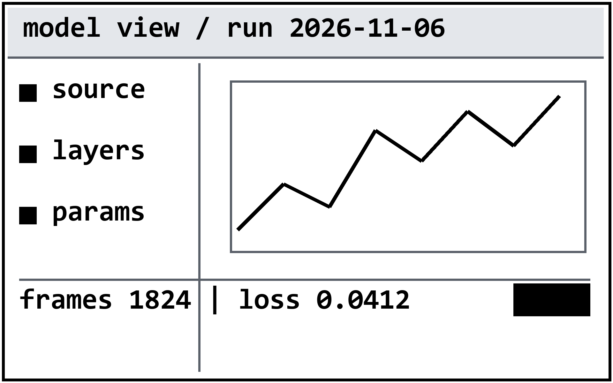

实体打样 · 只用库类
满配样张：表格 · 矢量图 · 位图
三线表、矢量折线、迷你趋势、两张位图 —— 四类“上纸会变样”的东西。位图分两类，纸面要求不同。
样式表体积 · 148 KB
FCP 中位数 · 1,180 ms
内存峰值 · 62 MB

同一份样式表在三种加载方式下的耗时（n=30）
| 加载方式 | FCP 中位数 | p95 | 备注 |
|---|---|---|---|
| 外链单文件 | 1,180 | 1,620 | — |
| 外链 + preload | 1,090 | 1,480 | 首字节提前 |
| 内联关键 CSS | 860 | 1,170 | 省一次往返 |
单位：ms。冷启动，每次清缓存。